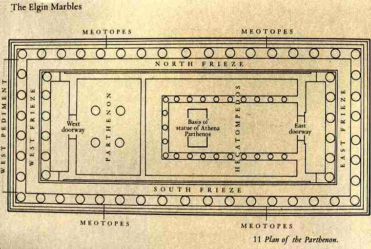
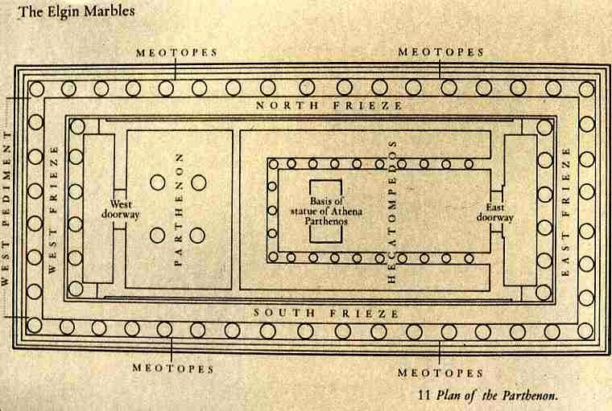

Φ(phi) = 1.61803398874989484820
The golden ratio, also known as the divine proportion, golden mean, or golden section or Greek letter (Phi) exists when a line is divided into two parts and the longer part (a) divided by the smaller part (b) is equal to the sum of (a) + (b) divided by (a), which both equal 1.618.
If we draw a square in rectangle. The ratio of remaining rectangle is same as the original rectangle.
i.e a+b/a = a/b
It is a number often encountered when taking the ratios of distances in simple geometric figures such as the pentagon, pentagram, decagon and dodecahedron. It is denoted phi Φ
In mathematics, the Fibonacci numbers, commonly denoted Fn form a sequence, called the Fibonacci sequence, such that each number is the sum of the two preceding ones, starting from 0 and 1.
So basically, the Fibonacci sequence starts like this: 0, 1, 1, 2, 3, 5, 8, 13, 21, 34, 55 and so on forever.
The mathematics of the golden ratio and of the Fibonacci sequence are intimately interconnected. Fibonacci numbers and the golden ratio have been used in works of art and architecture for centuries.
The patterns of the sequence is reflected in the structures of various plants, animals and humans, and the manifestations of the Fibonacci numbers and the golden ratio are seemingly endless. Thus, this indicates the mathematical nature of a world formed with order and precision.
Following are also some examples of Golden ratio
The Golden ratio was known to be discovered by the Greek Scultur Phidias. The symbol Φ which is called "phi" which is named after Phidias. Phidias Used this Golden ratio in many of his sculpture , the most famous is the Parthenon in Athens, built in about 440BC, which is completely made using this Golden ratio.
 

The italian mathemathician Fra Luca Bartolomeo de Pacioli found this concept of divine proportions when he studied about the different geometrical shape with the concept of Golden ratio. Pacioli writes of mathematical and artistic proportion, especially the mathematics of the golden ratio and its application in art and architecture. Some geometric solids, such as dodecahedrons and icosahedrons, have inherent golden ratios in their dimensions and spatial positions of their intersecting lines.
Da Vinci created the illustrations for the book “De Divina Proportione” (The Divine Proportion) by Luca Pacioli.Pacioli was a contemporary of Da Vinci’s, and the book contains dozens of beautiful illustrations of three-dimensional geometric solids and templates for script letters in calligraphy. Da Vinci studied various golden ration in nature and also applied in his art. Da vinci art was greatly influenced by the Divine ratio. Some of the most famous ine are "Mona Lisa" and “The Last Supper”